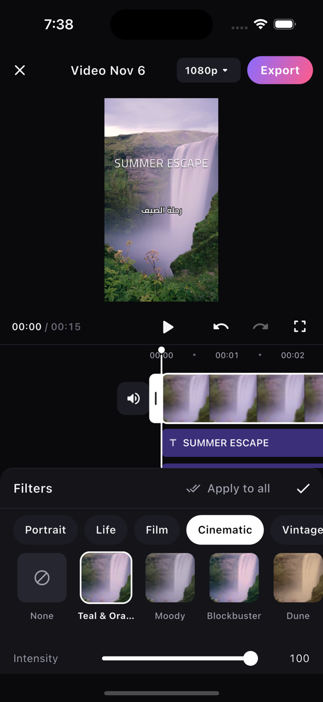
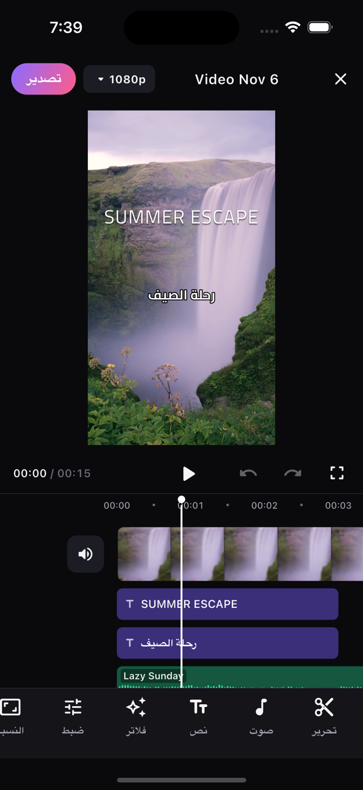
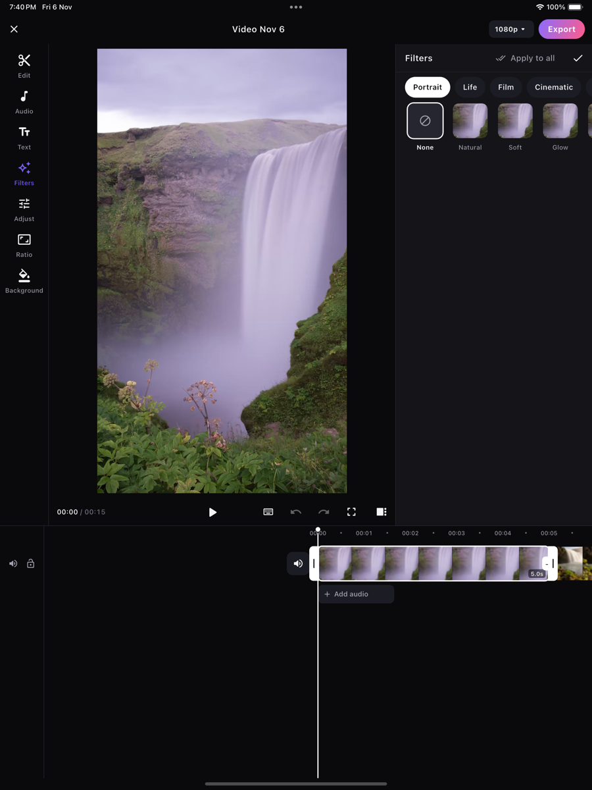

خط زمني متعدد المسارات
قسّم المقاطع وقصّها وأعد ترتيبها واستبدلها بدقة، مع التصاق مغناطيسي بمؤشر التشغيل وحواف المقاطع والإيقاع.
كتفيو محرر فيديو قوي لأجهزة iPhone وiPad وAndroid، مع خط زمني كامل ونصوص وموسيقى وفلاتر وانتقالات وتصدير بدقة 4K.
قريبًا على App Store وGoogle Play.


كل الأدوات التي تتوقعها من برامج التحرير الاحترافية، مصممة للّمس.
قسّم المقاطع وقصّها وأعد ترتيبها واستبدلها بدقة، مع التصاق مغناطيسي بمؤشر التشغيل وحواف المقاطع والإيقاع.
أكثر من 30 خطًا منها 14 خطًا عربيًا، مع الحدود والظلال والخلفيات والقوالب والحركات.
موسيقى ومؤثرات صوتية مجانية الحقوق، وتسجيل التعليق الصوتي على الخط الزمني مباشرة، وتأثيرات صوتية.
فلاتر سينمائية مضبوطة بعناية و11 أداة ضبط احترافية: السطوع والتباين والحرارة والإضاءات والظلال وغيرها.
انتقالات سلسة بالتلاشي والانزلاق والمسح والتكبير، وسرعة من 0.1× حتى 100× مع تغيير طبقة الصوت أو دونه.
تصدير مسرَّع بالعتاد من 480p حتى 4K وبمعدل يصل إلى 60 إطارًا، ثم احفظه في معرضك أو شاركه أينما شئت.
على iPad والأجهزة اللوحية بنظام Android، يتحول كتفيو إلى استوديو تحرير متكامل: واجهة أفقية مع شريط أدوات، ولوحة خصائص تُبقي المعاينة ظاهرة أثناء التعديل، وخط زمني أكبر مع أدوات التحكم بالمسارات.

لا رفع، لا حسابات، لا تتبّع. يحرّر كتفيو كل شيء ويصدّره على جهازك، لتبقى ذكرياتك ملكك وحدك.
اقرأ سياسة الخصوصيةكثير من برامج التحرير تُفرّق الحروف العربية. أما كتفيو فيعرض النص العربي متصلًا بشكل صحيح في المعاينة وفي الفيديو المُصدَّر، ويمزج العربية بالإنجليزية بسلاسة، ويقدّم واجهة كاملة من اليمين إلى اليسار.
نعم. كتفيو مجاني بالكامل، بلا علامة مائية على مقاطعك، وبلا اشتراك، وبلا مشتريات داخل التطبيق.
لا. افتح التطبيق وابدأ التحرير مباشرة، دون تسجيل أو تسجيل دخول.
لا. تتم جميع العمليات — التحرير والمعاينة والتصدير — على جهازك. لا تغادر صورك ومقاطعك وأصواتك جهازك أبدًا.
نعم. العربية لغة أساسية في كتفيو: تُعرض الحروف متصلة بشكل صحيح، وتعمل النصوص المختلطة بالعربية والإنجليزية، ويضم التطبيق مجموعة كبيرة من الخطوط العربية. كما تتوفر الواجهة كاملة بالعربية باتجاه من اليمين إلى اليسار.
كتفيو قادم قريبًا إلى App Store وGoogle Play. بلا علامة مائية، بلا حساب، بلا شروط خفية.